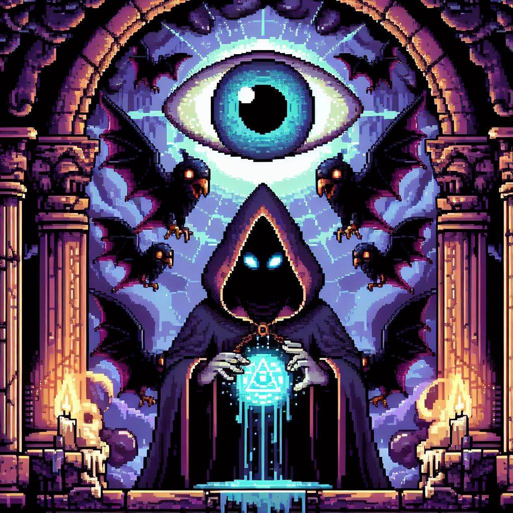
Segundo a lenda do historiador Ziyaad al-Qadir, o poderoso herói Koumori Shi
foi o escolhido para proteger o santuário sagrado contra o ataque das terríveis
criaturas abissais. Elas estão obstinadas em aprisionar o querido
guerreiro na tumba ancestral do Rei Bruxo V'yxhar e subjugar o mundo todo perante
a vontade das trevas. Através do Supremo Poder do Magnífico Artesão Benevolente,
o Herói será capaz de usar do conhecimento mágico ancestral para ser capaz de enfrentar estas
criaturas sinistras e também contará com relíquias extraordinárias para restaurar seu poder e
assegurar a vitória que lhe foi prometida nos tempos passados e assim reconstituir a ordem do Universo.
Herói
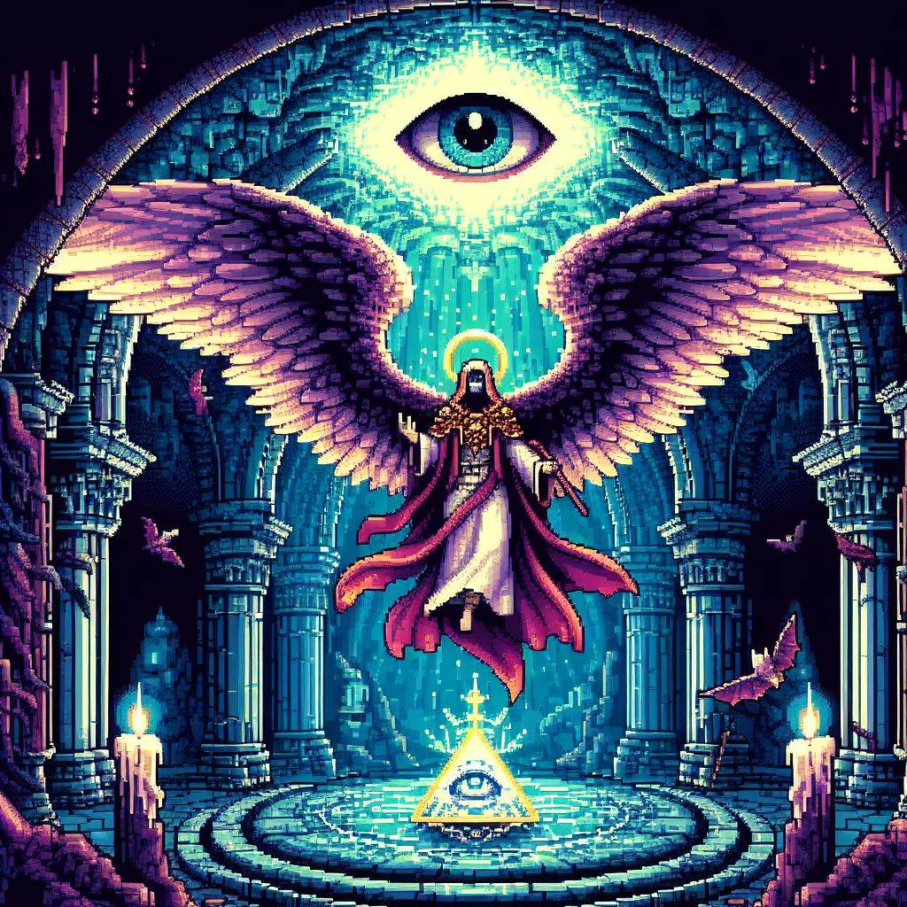
Anonymous
Atributos Aleatórios
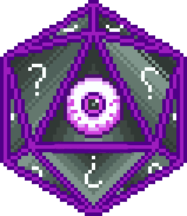
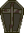
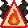
Controles
Key
Habilidade
Efeito
f
Orbe Lunar
Lança Orbes nas 4 direções cardeais que aniquilam os inimigos.
u
Ultimatum
Uma chuva de meteoros que dizima todos os inimigos.
s
Selo Mágico
Escudo protetor que defende o herói.
←
Mover Oeste
O personagem se desloca para a esquerda.
↑
Mover Norte
O personagem se desloca para cima.
→
Mover Leste
O personagem se desloca para a direita.
↓
Mover Sul
O personagem se desloca para baixo.
Relíquias
Retrato
Nome
Poder
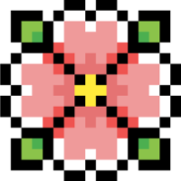
Flor da Vida
Restaura a Energia Vital do Herói.
Cristal Arcano
Restaura o Mana do Herói.
Olho de G'Null
Renova a Esperança do Herói.
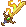
Espada Flamejante
A Luz Inspira o Herói a Lutar.
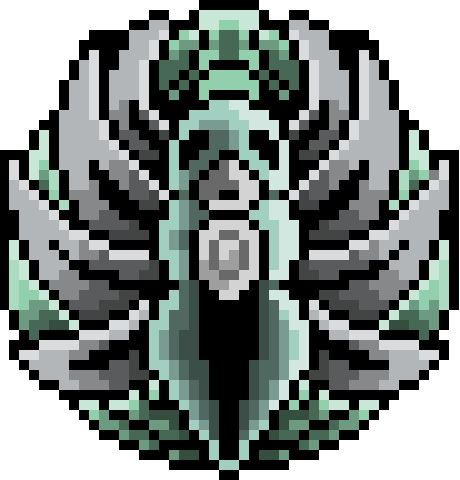
Talismã Sagrado
Destrói os Inimigos.
Criaturas
Visão
Nome
Descrição
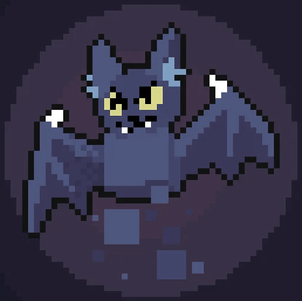
Koumori Shi
Grão-Mestre na arte da magia cosmológica, defensor do Universo.
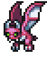
Imp Insano
Surgiram do Inferno para atormentar o corajoso herói.
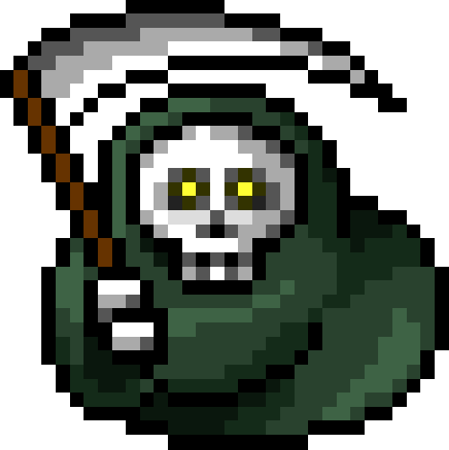
La Muerte
O ceifador se corrompeu diante das forças malignas.